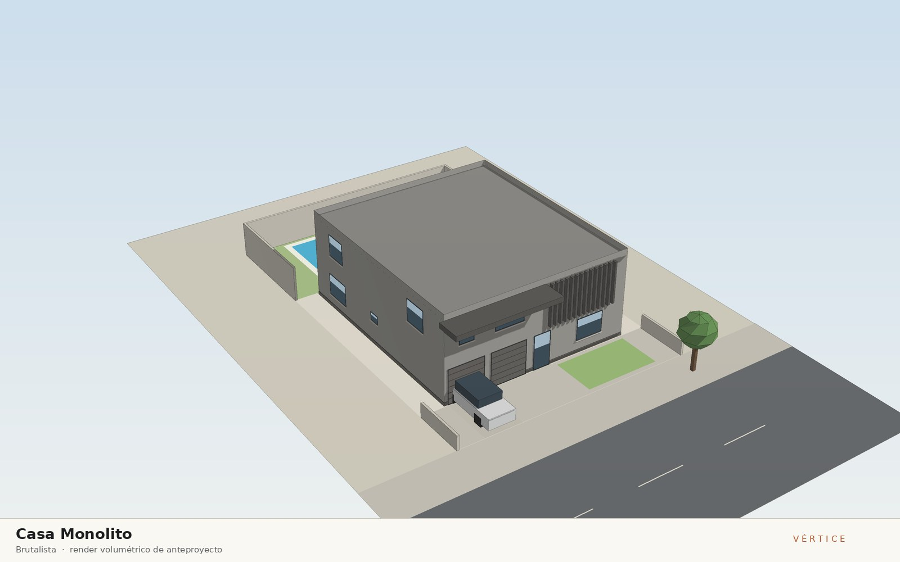
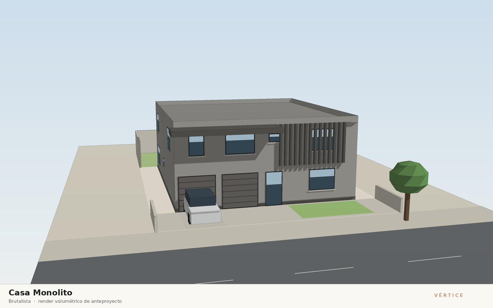
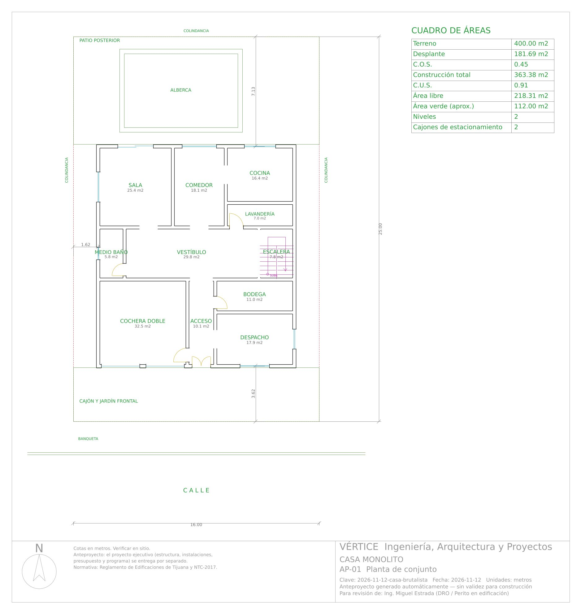
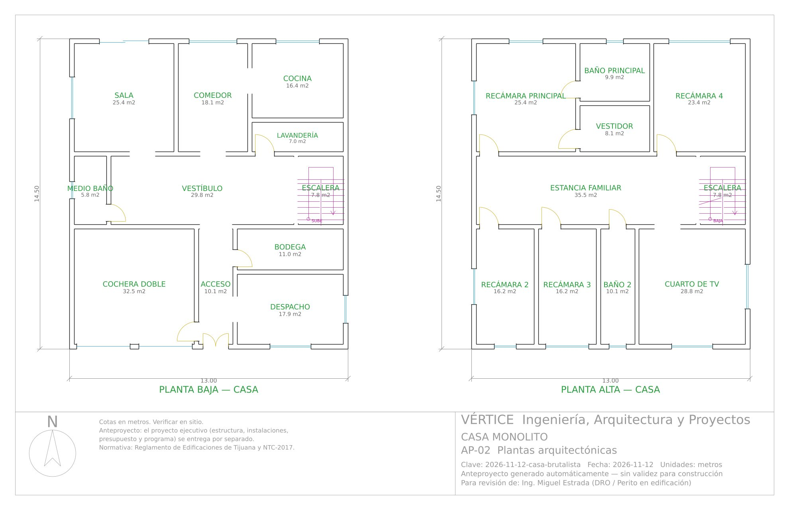
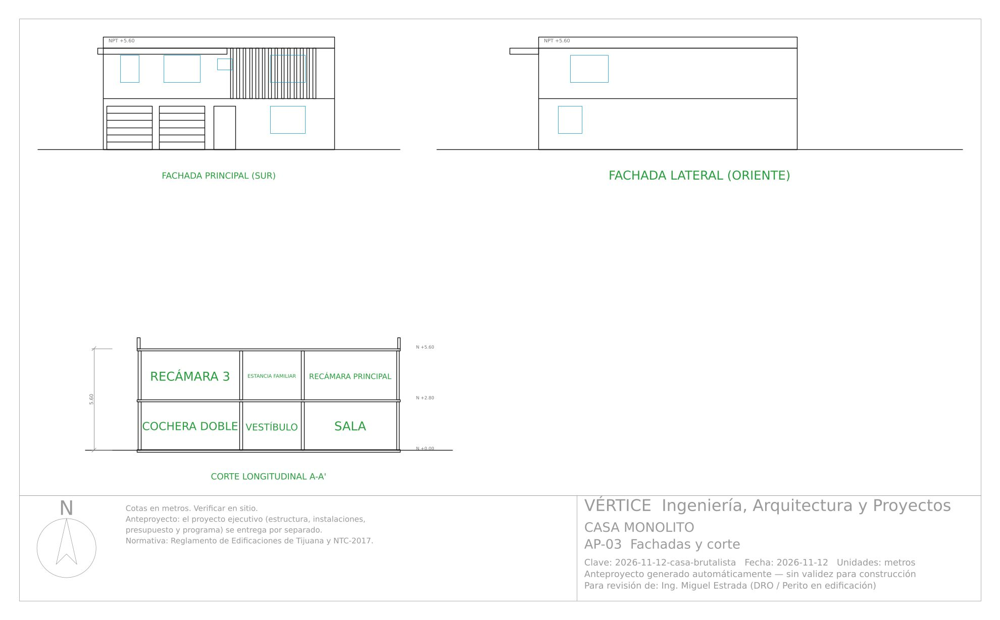

12 de noviembre de 2026 · Casa habitación
Casa Monolito
Corriente: Brutalista

Concepto
Vivienda de dos niveles en un lote de 16 x 25 m concebida como un solo bloque de concreto aparente con cimbra de duela, masivo y sereno, que se excava sólo donde hace falta luz y brisa. La masa térmica del concreto amortigua la oscilación diaria de temperatura del clima semiárido de Tijuana. Una gran losa en volado corre al nivel de azotea sobre la mitad poniente de la fachada sur y sombrea las ventanas de las recámaras frente al sol alto; en la mitad oriente, 14 parteluces verticales de concreto ritman la fachada y filtran el sol bajo de la mañana sobre el cuarto de TV. Los vanos son medidos (35 %) y se alinean norte–sur para la ventilación cruzada con la brisa marina; jardín frontal y patio posterior se plantan con agaves, salvia y romero de bajo consumo de agua.
Dictamen del arquitecto
- Terreno de 16.00 x 25.00 m (400 m²); casa de 12.75 x 14.25 m a ejes en 2 niveles, 363.4 m² construidos con desplante de 181.7 m²: COS 0.45 y CUS 0.91 (por verificar con el PDU de Tijuana). Jardín frontal y cajón de 3.62 m, cochera doble de 32.5 m² con 2 portones seccionales de 2.50 m y patio posterior de 7.13 m con alberca, al que se sale de la sala por el cancel corredizo P-4.
- Lenguaje brutalista adaptado a Tijuana: volumen único de concreto aparente con cimbra de duela, losa en volado de 1.60 m de vuelo y 35 cm de peralte al nivel de azotea sobre la mitad poniente de la fachada sur (sombra a las ventanas de recámaras 2 y 3) y 14 parteluces de concreto de 15x25 cm en la mitad oriente, frente al cuarto de TV; vanos medidos (35 %) y pretil de 0.60 m. Se descartó el muro de acento: el paño ciego libre de la fachada sur (≈ 0.9 m en la esquina oriente) quedaba encimado con los últimos parteluces.
- Recorrido: puerta doble pivotante P-3 de 1.20 m → acceso (10.1 m²) con paso a cochera, bodega (11.0 m²) y despacho (17.9 m²) → vestíbulo (29.8 m²) con medio baño (5.8 m², con ventana al poniente) y escalera en U → sala (25.4 m²), comedor (18.1 m²) y cocina (16.4 m²) comunicados al norte; lavandería (7.0 m²) con puerta al vestíbulo. Escalera de 1.15 m de tramo, peralte 17.5 cm, huella 29 cm (2p+h = 64 cm).
- Planta alta: estancia familiar (35.5 m²) que reparte a recámara principal (25.4 m²) con baño (9.9 m²) y vestidor (8.1 m²) propios, recámara 4 (23.4 m²), recámaras 2 y 3 (16.2 m² c/u, con clóset), baño 2 (10.1 m², con ventila) y cuarto de TV (28.8 m²). Todas las recámaras ≥ 2.70 m de lado con ventana al exterior; altura libre 2.66 m en ambos niveles (≥ 2.30 m); pisos de concreto pulido sellado en planta baja y madera de ingeniería de encino en planta alta.
- Correcciones de motor en esta revisión: (1) la losa en volado atravesaba los primeros parteluces (55–65 % del frente) en render, A-05 y Blender; ahora una sola geometría (layout.volado) se detiene 0.20 m antes del primer parteluz. (2) AP-03 no dibujaba el volado ni el muro de acento, y las laterales de AP-03 y A-05 no mostraban el volado de canto; ahora sí. (3) La cédula de acabados ponía 'porcelanato gris cemento 60x60 en baños' en sala, recámaras y cocina e ignoraba la cláusula 'piso de …' y el piso distinto por nivel; ahora la respeta (concreto pulido en PB, madera en PA). (4) El volado no se cuantificaba ni entraba en el área pluvial; ahora está en 'Por cotizar' (11.4 m²) y en la captación (193 m²).
Dictamen de ingeniería
- Veredicto: construible conforme a norma — 0 errores y 0 avisos en 28 verificaciones de coordinación —, sujeto a los supuestos por validar indicados abajo. El ciclo de coordinación cambió a block de 20 cm los muros en ambas direcciones (carga vertical en Y, densidad en X), redujo 15 % el ancho de ventanas sin bajar del 17.5 % de iluminación y limitó los vanos abiertos entre locales a 1.20 m; 2 muros de planta alta sin muro inferior se especifican como divisorios ligeros de tablaroca.
- Mampostería confinada: block de 20 cm, castillos K-1 15x20 (63 en PB y 58 en PA), dalas de desplante, cerramiento y pretil, 2 columnas C-1 15x30 (4 #4) y 11 trabes: T-1 de carga 30x55 cm (5 #6, claro 5.60 m) sobre la cochera doble, T-2 20x30 y cerramientos de 15x30 a 15x35 cm. Método simplificado NTC: X VR 112.0 t ≥ Vu 87.1 t (margen 29 %); Y VR 140.5 t ≥ 87.1 t; V basal 79.1 t con c = 0.213 supuesto y T = 0.18 s.
- Losas macizas de 14 cm en entrepiso (≥ 13.1 cm) y azotea (≥ 13.7 cm), f'c 250 kg/cm², #3 @ 15 a.s., @ 10 en sala, recámara principal y cuarto de TV (Mu máx. 2,498 kg·m/m en el cuarto de TV de 5.15 x 5.60 m). Losa en volado de 35 cm y 1.60 m de vuelo (11.4 m²) anclada a la losa de azotea con gotero: su armado de voladizo se confirma en la memoria definitiva.
- Zapatas corridas de concreto h = 20 cm: ZC-1 perimetral de 50 cm (q = 5.86 t/m²) y ZC-2 interior de 85 cm (q = 10.44 t/m²) contra una q adm supuesta de 12 t/m² a -0.80 m: requiere estudio de mecánica de suelos y confirmar el espectro sísmico del sitio. Cuantificación: 8,426 kg de acero (23.2 kg/m²) y 94.4 m³ de concreto.
- Instalaciones: toma Ø13 mm, 22 UM (1.21 L/s), cisterna de 2 m³ con hidroneumático y calentador de paso a gas; 25 UD, bajadas de baño 2 (al acceso) y baño principal (al comedor) junto a muro, colector Ø100 mm al 2 % a la red CESPT; captación de 193 m² (azotea + volado), 5.4 L/s a 2 bajadas Ø100 mm (9 L/s); 18 circuitos (16,500 W instalados, 11,550 W de demanda, 58.3 A), interruptor general 2P-100 A, desbalance 0.6 %; gas LP con tanque estacionario de 500 L ventilado y a más de 3 m de flamas. Factibilidades de CESPT y CFE por tramitar.
- Presupuesto de $2,057,850 + IVA ($2,222,478 con IVA fronterizo; $5,663/m²) y programa de 25 semanas (148.5 días hábiles); cancelería, puerta de parota, pisos de concreto pulido y madera, 14 parteluces y la losa en volado (11.4 m²) quedan entre las 43 partidas de la hoja "Por cotizar" hasta tener cotización de proveedores de Tijuana.
Materiales
Muros de block de concreto con recubrimiento de concreto aparente lavado con cimbra de duela de pino (textura vertical) y sellador hidrofugante mate; volado de planta alta y parteluces de concreto aparente colado en sitio; cancelería de aluminio negro mate con vidrio claro 6 mm; puerta de acceso pivotante de madera de parota; piso de concreto pulido sellado en planta baja y piso de madera de ingeniería de encino en planta alta; porcelanato gris cemento 60x60 en baños; azotea con impermeabilizante prefabricado APP y pretil de concreto aparente
Vistas

Anteproyecto — descargas
Láminas del anteproyecto






Proyecto ejecutivo
Proyecto ejecutivo completo — 17 láminas. Se entrega por separado; no se publica en esta galería.
Revisión de coordinación arquitectura–estructura–instalaciones–acabados y normativa: Sin errores · 0 avisos en 28 verificaciones.
Arquitectónico
- A-01 Planta de conjunto
- A-02 Plantas arquitectónicas amuebladas
- A-03 Plantas acotadas a ejes
- A-04 Planta de azotea
- A-05 Fachadas
- A-06 Cortes arquitectónicos
- A-07 Cancelería y acabados
Estructural
- E-01 Planta de cimentación
- E-02 Losas, trabes y castillos
- E-03 Detalles estructurales
- E-04 Cuantificación de acero y concreto
Instalaciones
- IH-01 Instalación hidráulica
- IS-01 Instalación sanitaria y pluvial
- IE-01 Instalación eléctrica
- IG-01 Instalación de gas LP
- IH-02 Isométrico hidráulico
- IE-02 Cuadro de cargas y diagrama unifilar
Incluye: Memoria técnica (Word/PDF) · Presupuesto (Excel) · Programa de obra (Excel y Gantt) · Juego de planos (PDF y DXF)
Revisión de calidad
Sin errores · 0 avisos
Cuadro de áreas
Ver los 21 espacios
| Bloque | Nivel | Espacio | Medidas (m) | Área (m²) |
|---|---|---|---|---|
| Casa | Planta baja | Cochera doble | 5.80 x 5.60 | 32.48 |
| Casa | Planta baja | Acceso | 1.80 x 5.60 | 10.08 |
| Casa | Planta baja | Despacho | 5.15 x 3.47 | 17.88 |
| Casa | Planta baja | Bodega | 5.15 x 2.13 | 10.96 |
| Casa | Planta baja | Medio baño | 1.70 x 3.40 | 5.78 |
| Casa | Planta baja | Vestíbulo | 8.75 x 3.40 | 29.75 |
| Casa | Planta baja | Escalera | 2.30 x 3.40 | 7.82 |
| Casa | Planta baja | Sala | 4.84 x 5.25 | 25.44 |
| Casa | Planta baja | Comedor | 3.44 x 5.25 | 18.08 |
| Casa | Planta baja | Lavandería | 4.46 x 1.57 | 7.03 |
| Casa | Planta baja | Cocina | 4.46 x 3.67 | 16.40 |
| Casa | Planta alta | Recámara 2 | 2.90 x 5.60 | 16.24 |
| Casa | Planta alta | Recámara 3 | 2.90 x 5.60 | 16.24 |
| Casa | Planta alta | Baño 2 | 1.80 x 5.60 | 10.08 |
| Casa | Planta alta | Cuarto de TV | 5.15 x 5.60 | 28.84 |
| Casa | Planta alta | Estancia familiar | 10.45 x 3.40 | 35.53 |
| Casa | Planta alta | Escalera | 2.30 x 3.40 | 7.82 |
| Casa | Planta alta | Recámara principal | 4.84 x 5.25 | 25.44 |
| Casa | Planta alta | Vestidor | 3.44 x 2.36 | 8.14 |
| Casa | Planta alta | Baño principal | 3.44 x 2.89 | 9.94 |
| Casa | Planta alta | Recámara 4 | 4.46 x 5.25 | 23.43 |
Anteproyecto conceptual generado por el motor Vértice. El predimensionamiento estructural y los cálculos de instalaciones son preliminares y no sustituyen la memoria de cálculo definitiva, el estudio de mecánica de suelos ni la revisión y firma del DRO y corresponsables.